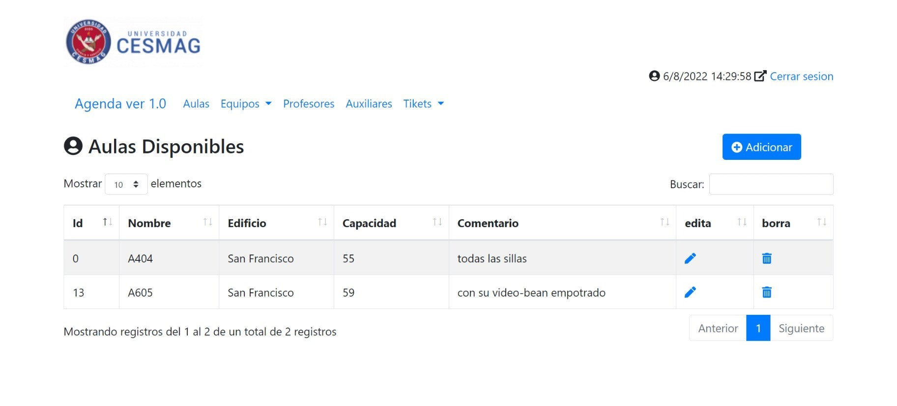
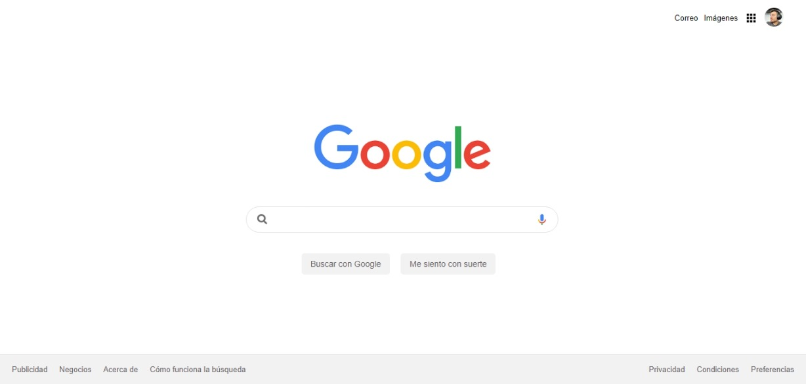
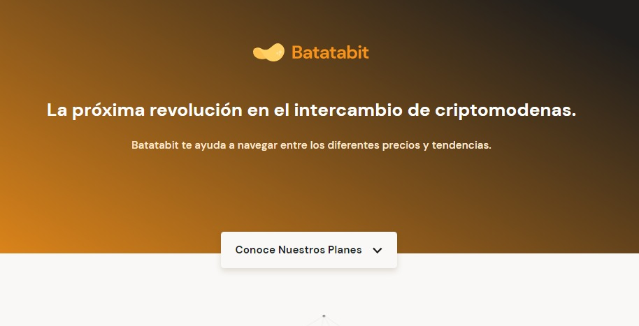

Estudiante de Ingeniería de Sistemas · Desarrollo Backend



Soy estudiante de séptimo semestre de Ingeniería de Sistemas en la Universidad CESMAG (Pasto) y trabajo desde 2021 como auxiliar administrativo en la Oficina de Medios Educativos. Me enfoco en el desarrollo backend con PHP, Laravel y MySQL, y complemento mi perfil con ciberseguridad y entornos Linux y Docker. Construyo aplicaciones que resuelven problemas reales de mi entorno: un sistema de registro y asistencia para ceremonias de grado y un control de préstamos de equipos audiovisuales. Trabajo con Git y GitHub, pruebas unitarias, Scrum y documentación.
¿Quieres que hablemos? Escríbeme a germancamilobernal@hotmail.com o encuéntrame en LinkedIn y GitHub.